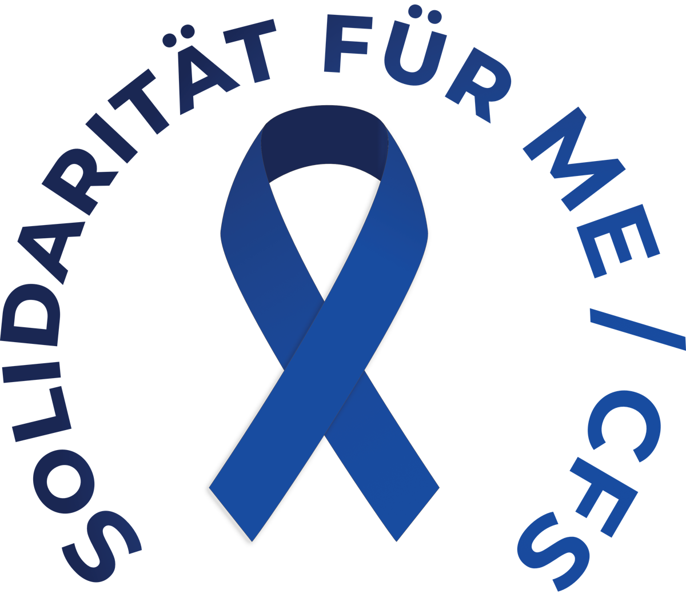

Barbara, 35
Mit dem eigenen Kind spielen können – ohne den Preis danach.
Schmerzen, Erschöpfung und kognitive Probleme machen einfache Haushaltsaufgaben schwer.
Weiterlesen
Berichte von Betroffenen
„Wir wollten die Welt entdecken – jetzt ist Staubsaugen ein Marathon.“
Barbara, 35. Vor 2022 sportlich und gerade Mutter geworden – seit mehreren COVID-Infektionen an ME/CFS erkrankt.
Eine öffentliche Benefizveranstaltung in Kooperation mit der Stadt Graz – ehrenamtlich organisiert von Betroffenen und Unterstützer:innen.
Kurz erklärt
ME/CFS – Myalgische Enzephalomyelitis / Chronisches Fatigue-Syndrom – ist eine schwere, chronische Multisystemerkrankung. In rund 80 % der Fälle beginnt sie nach einer Infektion, etwa nach COVID-19. Die WHO führt sie seit 1969 als neurologische Erkrankung.
Typisch ist die Belastungsintoleranz (PEM): Schon ein Einkauf oder ein Telefonat kann die Symptome verschlimmern – oft erst ein bis drei Tage später. Eine ursächliche Therapie gibt es bisher nicht; Pacing, das Haushalten mit der eigenen Energie, kann Verschlechterungen vorbeugen.
In Österreich sind schätzungsweise 26.000 bis 80.000 Menschen betroffen – schon vor der Pandemie.
Mehr bei der Österreichischen Gesellschaft für ME/CFSME/CFS nimmt Menschen aus ihrem Leben – oft unbemerkt von ihrer Umgebung. Hier erzählen sie selbst.
Im Video
Ein kurzer Film vom Grazer Hauptplatz. Teilt ihn gern, damit mehr Menschen von ME/CFS erfahren.
Mehr auf InstagramSo sah der Tag 2026 aus. Das Programm für den 22. Mai 2027 folgt.
11:00
Moderation und Eröffnung des Benefiz-Flohmarkts
11:05–14:00
Beiträge von Betroffenen, Ärzt:innen mit Schwerpunkt ME/CFS und aus der Politik
ab 14:00
Benefiz-Flohmarkt, Essen und Austausch – Musik: Duo Nachtigall
16:00
Tanzgruppe Dansations
16:30–18:00
Offenes Beisammensein, Spendenmöglichkeiten und Informationsangebote
Online über GoFundMe, vor Ort in den Spendenboxen oder per QR-Code. Merch-Erlöse gehen an WE&ME.
Ob Flohmarktspende, Sponsoring oder ein paar Stunden Mithilfe – meldet euch.
solidaritaetfuermecfs@gmail.comFür den Benefiz-Flohmarkt.
Finanziell oder als Sachleistung.
Organisation, Aufbau, Durchführung.
Danke an alle Sponsor:innen


Außerdem danken wir KPÖ Graz, Gesundheitsstadtrat Robert Krotzer, Raiffeisenbank St. Peter Graz, feeling Handelsges.m.b.H, Hügelland Apotheke und Grasmug GmbH.